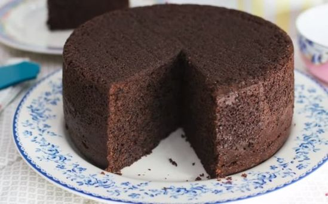

Cómo hacer torta de chocolate

Si te gustan los postres con chocolate tienes que probar esta receta. Te enseñamos a preparar una torta de chocolate esponjosa, húmeda y fácil, sin duda, ¡una de las más sabrosas que hayas probado!
Ingredientes
- 294g de harina 0000
- 290g de azcúcar
- 1 1/2cdta de bicarbonato des sodio
- 180ml de aceite
- 3 huevos
- 140g de cacao amargo
- 336ml de leche
- 1 1/2cdta de vinagre blanco
- 1 1/2cdta de esencia de vainilla
- 1 1/2 polvo para hornear
- pizca de sal
- pizca de canela (opcional)
Preparación
Recuerde que debe precalentar el horno a temperatura baja, enmantecar y enharinar un molde de entre 24 y 30 cm de diámetro antes de comenzar con la receta.
- En un recipiente amplio, tamiza la harina, el cacao, el bicarbonato y el polvo para hornear. Añade luego 2/3 partes del azúcar, la pizca de sal y la canela. Mezcla para integrar todo.
- Agregue el aceite, la leche y mezcle bien. Añada luego el vinagre y siga batiendo.
- Separe las yemas e incorpore en la mezcla anterior junto con esencia de vainilla y continúe mezclando.
- En un recipiente aparte, batir las claras a punto nieve con el azúcar restante e incorpórelas a la mezcla con ayuda de una espátula haciendo movimientos suaves y envolventes.
- Vierte la masa en el molde y hornea a 180ºC durante 50 minutos.
Para comprobar que la torta de chocolate está lista, pínchela con un palillo o cuchillo y si sale limpio y seco es que ya está bien hecha.
- Retírela del horno y deje enfriar a temperatura ambiente, luego desmoldar.
Click para volver